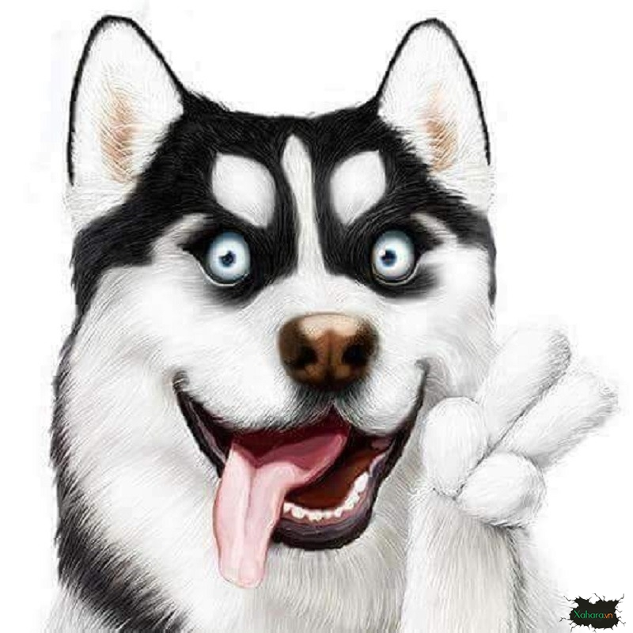

-

Husky
Chó Husky Sibir là loài chó có tầm ảnh hưởng “toàn cầu”. Chúng luôn dành được sự quan tâm đặc biệt của những người đam mê chó cảnh và tạo cảm hứng cho rất nhiều nghệ sĩ.
Read More -
Pug
Pug là giống chó mặt xệ nổi tiếng xuất hiện khá lâu đời từ Trung Quốc. Được mang đến châu Âu và bắt đầu phát triển rộng rãi vào thế kỷ 16. Chúng trở thành thú cưng rất được yêu thích trong Hoàng gia, đặc biệt là ở Anh và Hà Lan.
Read More -
Phốc sóc
Chó Phốc sóc (Pomeranian) là giống chó cảnh có nguồn gốc từ châu Âu. Tên của chúng bắt nguồn từ địa danh Pomerania, trước là vùng Trung Âu, ngày nay là miền Tây Bắc Ba Lan và Đông Bắc Đức.
Read More